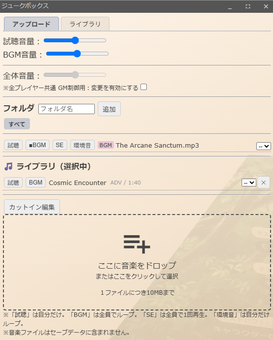
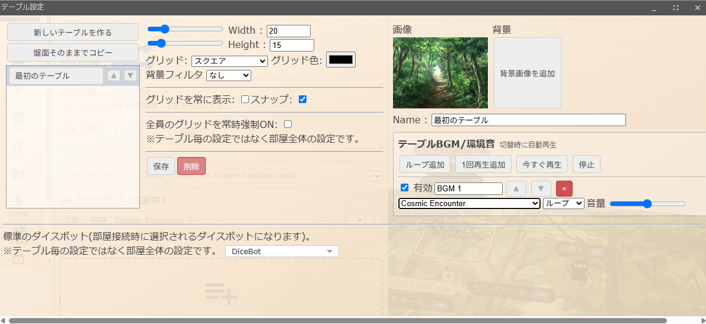
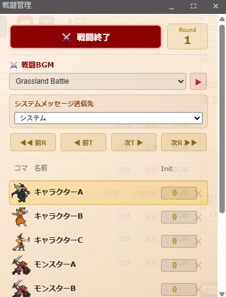

🎵 ジュークボックス・ミュージックライブラリ
BGM・効果音・環境音の再生と、サーバー配信のミュージックライブラリを利用できます。
ジュークボックスとは
TRPGの雰囲気作りに欠かせない音楽再生機能です。以下のことができます。
- BGMのループ再生（音量調整付き）
- 効果音（SE）の1回再生
- 環境音のループ再生
- テーブルごとの自動BGM切り替え
- 戦闘開始時の自動BGM切り替え
- サーバー配信のミュージックライブラリ
ジュークボックスを開く
サイドメニューから「ジュークボックス」ボタンをクリックすると、ジュークボックスパネルが開きます。

▲ ジュークボックスパネル。上部のタブでBGM・SE・環境音を切り替え、音量スライダーで調整できる。
3つの再生モード
ジュークボックスには3つの再生モードがあります。タブを切り替えて使い分けます。
🎵 BGMモード
- 音楽ファイルをループ再生する
- 音量スライダーで調整可能
- テーブルBGM・戦闘BGMの再生にも使用される
- 複数のBGMを同時に再生可能（優先度システムで自動調整）
🔊 SE（効果音）モード
- 効果音を1回だけ再生する
- ドアの開閉音、爆発音、ファンファーレなどに最適
- 音量スライダーで調整可能
- 停止ボタンですぐに止められる
🌧️ 環境音モード
- 環境音をループ再生する
- 雨音、風音、川のせせらぎなどの場面作りに
- BGMと同時に再生可能
- 音量スライダーで調整可能
テーブルBGM 自動再生
テーブルごとにBGMを設定しておくと、そのテーブルに入った時に自動的にBGMが再生されます。
- テーブル設定パネルを開く
- BGM欄で音楽ファイルを選択
- テーブルに入ったプレイヤー全員に自動再生
街・ダンジョン・ボス部屋など、テーブルを切り替えるだけで雰囲気をがらりと変えられます。

▲ テーブル設定でBGMを指定する。テーブルに入ったプレイヤー全員に自動再生される。
戦闘BGM 自動切替
戦闘管理パネルで「戦闘BGM」を設定しておくと、戦闘開始ボタンを押した瞬間に自動的に戦闘BGMに切り替わります。
- 戦闘開始 → 戦闘BGMが自動再生
- 戦闘終了 → 元のBGM（テーブルBGM等）に自動的に戻る
- 戦闘管理パネルから直接BGMを選択・再生できる

▲ 戦闘管理パネルで戦闘BGMを設定。戦闘開始ボタンを押すと自動的に切り替わる。
BGM優先度システム
複数のBGMソースが競合した場合、優先度が高い方が勝つ仕組みになっています。
例：街でテーブルBGMが流れている状態で戦闘が始まると、戦闘BGMが優先されて切り替わります。戦闘が終わるとテーブルBGMに戻ります。
音量調整
各再生モードごとに独立した音量スライダーがあります。
- BGM音量 — BGMモード・テーブルBGM・戦闘BGMすべてに適用
- SE音量 — 効果音専用
- 環境音音量 — 環境音専用
▲ パネル上部の音量スライダー。BGM音量・試聴音量などを個別に調整できる。
音量設定は各プレイヤー個別です。他のプレイヤーの音量は変更されません。
ミュージックライブラリ サーバー配信
サーバーに登録された音楽ファイルを、全プレイヤーにストリーミング配信します。各プレイヤーが自分で音源を用意する必要はありません。
使い方
- ジュークボックスまたはテーブル設定で、ライブラリから音楽を選択して再生
- ファイルはサーバーから配信されるので、P2Pの接続状況に依存しない
- カテゴリ別（BGM/SE/環境音）に整理されている
試聴・ダウンロード
ライブラリの楽曲は以下のページから試聴・ダウンロードできます。
本ライブラリの楽曲は、AI（生成AI）を用いて作成された音源です。著作権フリーで TRPG や卓上ゲームのBGMとしてご自由にお使いいただけます。商用利用についてはお問い合わせください。
サーバー配信について
ユドナリウムリコリスでは、音声ファイルの同期にサーバー配信方式を採用しています。
- サーバーから直接ストリーミング — P2Pに頼らず安定配信
- リトライ強化 — P2Pフォールバック前にサーバー配信を複数回リトライ
- 全プレイヤーに同時配信 — 接続状況による音切れを軽減
v1.54.0から、画像・音声ファイルともにサーバー配信優先に切り替わりました。
Tips
- 🎵 BGM + 環境音を同時に再生して、より臨場感のある音環境を作れる
- ⚔️ 戦闘BGMを設定しておけば、戦闘のたびに手動で切り替える必要がない
- 🗺️ テーブルごとにBGMを設定すれば、場面転換がスムーズ
- 🔊 SEは1回再生なので、ファンファーレや開門音などに最適
- 📺 音量は各プレイヤー個別設定。ヘッドホン派とスピーカー派が混在してもOK
- 💾 部屋データ保存時にジュークボックス設定も一緒に保存される